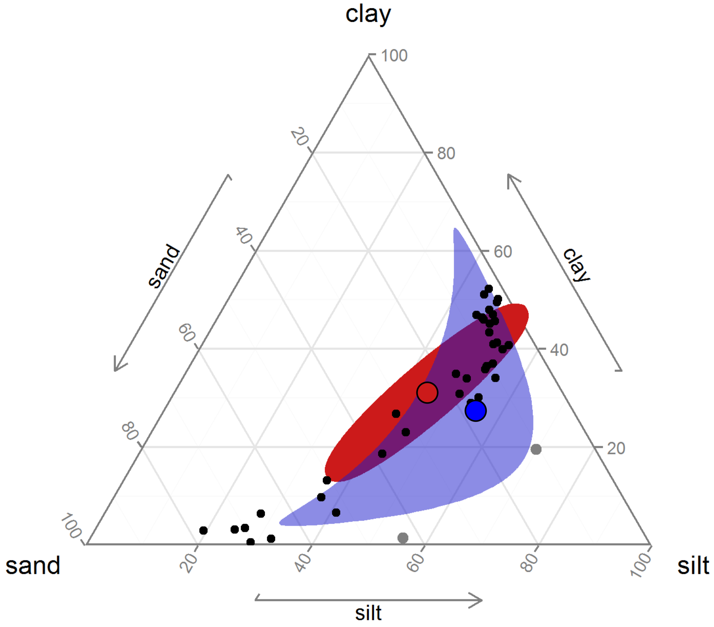
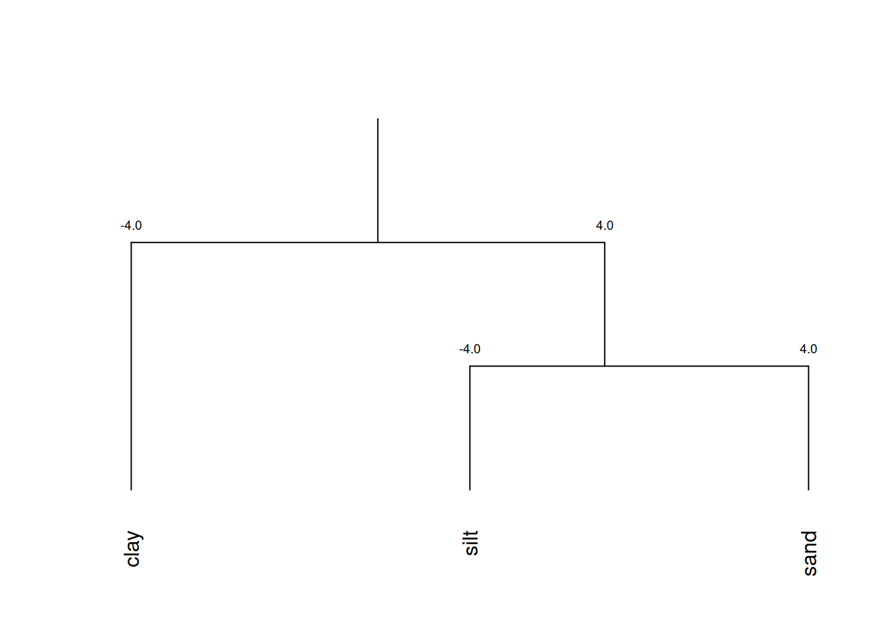
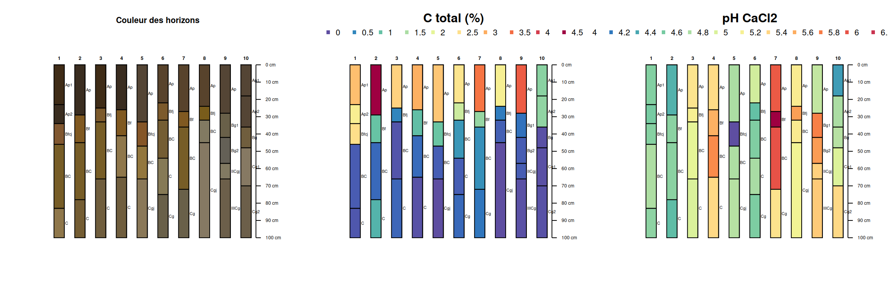
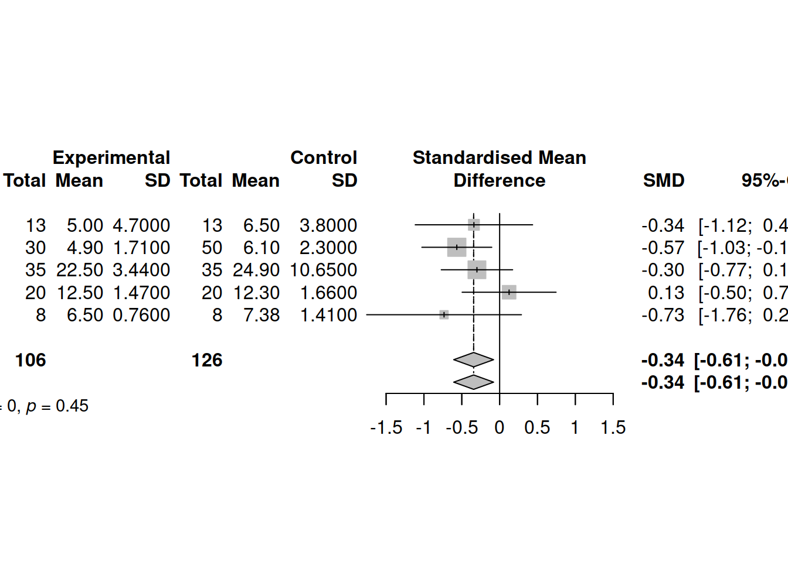

9 Explorer R
L’apprentissage de R peut être étourdissant. Cette section est une petite pause fourre-tout qui vous introduira aux nombreuses possibilités de R.
Objectifs spécifiques:
À la fin de ce chapitre, vous
- serez en mesure d’identifier les sources d’information principales sur le développement de R et de ses modules
- comprendrez l’importance du prétraitement des données, en particulier dans le cadre de l’analyse de données compositionnelles, et saurez effectuer un prétraitement adéquat
- saurez comment acquérir des données météo d’Environnement Canada avec le module weathercan
- saurez identifier les modules d’analyse de sols (soiltexture et aqp)
- saurez comment débuter un projet de méta-analyse et de déploiement d’un logiciel sur R
- saurez utiliser le module d’intégration d’IA générative chattr et connaîtrez les enjeux liés à cette technologie
Pour certains, le langage R est un labyrinthe. Pour d’autres, c’est une myriade de portes ouvertes. Si vous lisez ce manuel, vous vous êtes peut-être engagé dans un labyrinthe dans l’objectif d’y trouver la clé qui dévérouillera une porte bien précise qui mène à un trésor, un objet magique… ou un diplôme. Peut-être aussi prendrez-vous le goût d’errer dans ce labyrinthe, explorant ses chemins, pour y dénicher au hasard de petits outils et des débouchés.
Cette section est un amalgame de plusieurs outils de R pertinents en analyse écologique.
Notez-bien
Ce chapitre est toujours en développement. Il me reste des modifications et des corrections à apporter, et certains liens de sites pourraient être non-fonctionnels. Je prévois terminer au courant de la semaine.
9.1 R sur le web
Dans un environnement de travail en évolution rapide et constante, il est difficile de considérer que ses compétences sont abouties. Rester informé sur le développement de R vous permettra de trouver et de résoudre des problèmes persistants de manière plus efficace ou par de nouvelles avenues, et vous offrira même l’occasion de dénicher des problèmes dont vous ne soupçonniez pas l’existence. Plusieurs sources d’information vous permettront de vous tenir à jour sur le développement de R, de ses environnements de travail (RStudio, Jupyter, etc.) et des nouveaux modules qui s’y greffent. Plus largement, vous gagnerez à vous informer sur les dernières tendances en calcul scientifique sur d’autres plate-forme que R (Python, Javascript, Julia, etc.). Évidemment, nos tâches quotidiennes ne nous permettent pas de tout suivre. Même si vous pouviez n’attrapper que 1% du défilement, ce serait déjà 1% de plus que rien du tout.
Évidemment, rester au courant aide parce que vous en apprenez davantage sur les outils et leurs applications. Mais ça aide aussi parce que ça vous permet de connaître des gens et des organisations! Il est très utile de savoir qui travaille sur quoi et où se déroulent les développements sur un sujet donné, car si vous cherchez consciemment quelque chose plus tard, ça vous aidera à trouver votre chemin plus facilement. - Maëlle Salmon, Keeping up to date with R news (ma traduction)
Je vous propose une liste de ressources. Ne vous y tenez surtout pas: discartez ce qui ne vous convient pas, et partez à l’aventure!
9.1.1 GitHub
Nous avons vu chapitre 5 l’importance d’utilser des outils d’archivage et de suivi de version, comme git, dans le déploiement de la science ouverte. En effet, GitHub est une plateforme git sur Internet, acquise par Microsoft, qui est devenue un réseau social de développement informatique. De nombreux modules de R y sont développés. Au chapitre 5, vous avez appris à y ouvrir un compte et à y archiver du contenu. Vous pourrez alors suivre (dans le même sens que sur d’autres réseaux sociaux) le développement de projets et suivre les travaux des personnes qui vous semblent d’intérêt.
9.1.2 X (anciennement Twitter)
Le hashtag #rstats rassemble (ou plutôt rassemblait) sur Twitter ce qui se publie sur le sujet. Depuis le rachat du réseau social par Elon Musk et les divers changements qui y ont été effectués, plusieurs s’en sont détournés pour privilégier des plateformes opensource, par exemple les réseaux sociaux décentralisés de [Mastodon](https://joinmastodon.org/fr.
On y retrouve les comptes de R-bloggers, RStudio et rOpenSci. Certaines communautés y sont aussi actives, comme R4DS online learning community, qui partage des nouvelles sur R, et R-Ladies Global, qui vise à amener davantage de diversité à la communauté de R. Des comptes thématiques comme Daily R Cheatsheets, R for the Rest of Us et One R Package a Day permettent de découvrir quotidiennement de nouvelles possibilités. Enfin, plusieurs personnes contribuent positivement à la communauté R. Hadley Wickham brille parmi les étoiles de R. Les comptes de Mara Averick, Claus Wilke et David Robinson sont aussi intéressants.
9.1.3 Les serveurs Mastodon
Mastodon est un réseau social opensource décentralisé, gratuit et interopérable qui fait partie de l’Univers Fediverse. Il est composé de plusieurs serveurs indépendants pouvant communiquer entre eux, et est assez similaire à Twitter. Depuis quelques années, la communauté de programmation R s’est largement tournée vers cette option, et vous trouverez la plupart des personnes ou des groupes mentionnés à la section précédente sur ce site :
- Posit
- rOpenSci
- R4DS online learning community
- R-Ladies Global
- One R Package a Day
- Hadley Wickham
- Mara Averick,
- Maëlle Salmon
Et pour les hashtags :
Peu importe votre choix de serveur, vous pourrez ensuite effectuer une recherche en utilisant le @ pour trouver des comptes et le # pour chercher des mots-clés. Bref, n’hésitez pas à fouiller et à suivre ce qui vous intéresse!
9.1.4 Nouvelles
Le site d’aggrégation R-bloggers, mis à jour quotidiennement, republie des articles en anglais tirés d’un peu partout sur la toile. On y trouve principalement des tutoriels et des annonces de nouveaux développements. Deux fois par mois, l’organisation rOpenSci offre un portrait de l’univ-R (#dadjoke), ce que R Weekly offre de manière hebdomadaire (l’information sera probablement redondante). Le tidyverse a quant à lui son propre blogue.
9.1.5 Des questions?
Bien que davantage voués à la résolution de problème qu’ à l’exploration de nouvelles opportunités, Stackoverflow et Cross Validated sont des plateformes prisées. De plus, la liste de courriels r-sig-ecology permet des échanges entre professionnels et novices en analyse de données écologiques avec R.
9.1.6 Participer
R est un logiciel basé sur une communauté de développement, d’utilisation et de vulgarisation. Des personnes offrent généreusement du temps de support. Si vous vous sentez à l’aise, offrez aussi le vôtre!
9.1.7 Mise en garde
Les modules de R sont développés par quiconque le veut bien: leur qualité n’est pas nécessairement auditée. Souvent, ils ne sont vérifiés que par une vigilance communautaire: dans ce cas, vous êtes les cobailles. Ce qui n’est pas nécessairement une mauvaise chose, mais cela nécessite de prendre ses précautions. Dans sa conférence How to be a resilient R user, Maëlle Salmon propose quelques guides pour juger de la qualité d’un module.
1. Le module est-il activement développé?
Bien!
Attention!
2. Le module est-il bien testé?
Vérifiez si le module a fait l’objet d’une publication scientifique, s’il a été utilisé avec succès dans la littérature ou dans des documents crédibles.
3. Le module est-il bien documenté?
Un site internet dédié est-il utilisé pour documenter l’utilisation du module? Les fichiers d’aide sont-ils complets, et sont-ils de bonne qualité?
4. Le module est-il largement utilisé?
Un module peu populaire n’est pas nécessessairement de mauvaise qualité: peut-être est-il seulement destiné à des applications de niche. S’il n’est pas un indicateur à lui seul de la solidité ou la validité d’un module, une masse critique indique que le module a passé sous la surveillance de plusieurs utilisateurs. Dans GitHub, ceci peut être évalué par le nombre d’étoiles attribué au module (équivalent à un J’aime).
5. Le module est-il développé par une personne ou une organisation crédible?
On peut affirmer sans trop se compromettre que l’équipe de RStudio (Posit) développe des modules de confiance. Tout comme il faudrait se méfier d’un module développé par une personne anonyme.
Le module packagemetrics permet d’évaluer ces critères.
9.1.8 Prendre tout ça en note
Un logiciel de prise de notes (il en existe plein, mais je vous suggère d’opter pour les options encryptées) pourrait vous être utile pour retrouver l’information soutirée de vos flux d’information. Mais certaines personnes consignent simplement leurs informations dans un carnet ou un document de traitement de texte.
9.2 Quelques outils en écologie mathématique avec R
9.2.1 Prétraitement des données
Il arrive souvent ques les données brutes ne soient pas exprimées de manière appropriée ou optimale pour l’analyse statistique ou la modélisation. Vous devrez alors effectuer un prétraitement sur ces données. Lors du chapitre 7, nous avons abordé la mise à l’échelle, où des variables numériques étaient transformées pour avoir une moyenne de zéro et un écart-type de 1. Cette opération permettait d’apprécier les coefficients et leur incertitude sur une même échelle. L’encodage catégorielle a quant à lui permi d’utiliser des méthodes quantitatives sur des données qualitatives. Dans les deux cas, nous n’avons pas utilisé le terme, mais il s’agissait d’un prétraitement, c’est-à-dire une transformation des données préalable à l’analyse ou la modélisation.
Un prétraitement peut consister simplement en une transformation logarithmique ou exponentielle. Nous verrons les transformations les plus communes comme la standardisation, la mise à l’échelle sur une étendue et la normalisation. Puis nous verrons comment ces opérations de prétraitement sont offertes dans le module recipes.
recipes n’est pas en mesure d’effectuer toutes les transformations imaginables. Pour des opérations plus spécialisées, si vos données forment une partie d’un tout (exprimées en pourcentages ou fractions), vous devriez probablement utiliser un prétraitement grâce aux outils de l’analyse compositionnelle. Avant de les aborder, nous allons traiter des transformations de base.
9.2.1.1 Standardisation
La standardisation consiste à centrer vos données à une moyenne de 0 et à les échelonner à une variance de 1, c’est-à-dire
\[x_{standard} = \frac{x - \bar{x}}{\sigma}\]
où \(\bar{x}\) est la moyenne du vecteur \(x\) et où \(\sigma\) est son écart-type.
Ce prétraitement des données peut s’avérér utile lorsque la modélisation tient compte de l’échelle de vos mesures (par exemple, les paramètres de régression vus au chapitre 7 ou les distances que nous verrons au chapitre 10). En effet, les pentes d’une régression linéaire multiple ne pourront être comparées entre elles que si elles sont une même échelle. Par exemple, on veut modéliser la consommation en miles au gallon (mpg) de voitures en fonction de leur puissance (hp), le temps en secondes pour parcourir un quart de mile (qsec) et le nombre de cylindre.
Call:
lm(formula = mpg ~ hp + qsec + cyl, data = mtcars)
Residuals:
Min 1Q Median 3Q Max
-4.3223 -1.9483 -0.5656 1.5452 7.7773
Coefficients:
Estimate Std. Error t value Pr(>|t|)
(Intercept) 55.30540 9.03697 6.120 1.33e-06 ***
hp -0.03552 0.01622 -2.190 0.03700 *
qsec -0.89424 0.42755 -2.092 0.04567 *
cyl -2.26960 0.54505 -4.164 0.00027 ***
---
Signif. codes: 0 '***' 0.001 '**' 0.01 '*' 0.05 '.' 0.1 ' ' 1
Residual standard error: 3.003 on 28 degrees of freedom
Multiple R-squared: 0.7757, Adjusted R-squared: 0.7517
F-statistic: 32.29 on 3 and 28 DF, p-value: 3.135e-09Les pentes signifient que la distance parcourue par gallon d’essence diminue de 0.03552 miles au gallon pour chaque HP, de 0.89242 par seconde au quart de mile et de 2.2696 par cyclindre additionnel. L’interprétation est conviviale à cette échelle. Mais lequel de ces effets est le plus important? L t value indique que ce seraient les cylindres. Mais pour juger l’importance en terme de pente, il vaudrait mieux standardiser.
── Attaching core tidyverse packages ──────────────────────── tidyverse 2.0.0 ──
✔ dplyr 1.1.4 ✔ readr 2.1.5
✔ forcats 1.0.0 ✔ stringr 1.5.1
✔ ggplot2 3.5.0 ✔ tibble 3.2.1
✔ lubridate 1.9.3 ✔ tidyr 1.3.1
✔ purrr 1.0.2
── Conflicts ────────────────────────────────────────── tidyverse_conflicts() ──
✖ dplyr::filter() masks stats::filter()
✖ dplyr::lag() masks stats::lag()
ℹ Use the conflicted package (<http://conflicted.r-lib.org/>) to force all conflicts to become errorsstandardise <- function(x) (x-mean(x))/sd(x)
mtcars_sc <- mtcars %>%
mutate_if(is.numeric, standardise) # ou bien scale(mtcars, center = TRUE, scale = TRUE)
modl_sc <- lm(mpg ~ hp + qsec + cyl, mtcars_sc)
summary(modl_sc)
Call:
lm(formula = mpg ~ hp + qsec + cyl, data = mtcars_sc)
Residuals:
Min 1Q Median 3Q Max
-0.71716 -0.32326 -0.09384 0.25639 1.29042
Coefficients:
Estimate Std. Error t value Pr(>|t|)
(Intercept) 1.472e-16 8.808e-02 0.000 1.00000
hp -4.041e-01 1.845e-01 -2.190 0.03700 *
qsec -2.651e-01 1.268e-01 -2.092 0.04567 *
cyl -6.725e-01 1.615e-01 -4.164 0.00027 ***
---
Signif. codes: 0 '***' 0.001 '**' 0.01 '*' 0.05 '.' 0.1 ' ' 1
Residual standard error: 0.4983 on 28 degrees of freedom
Multiple R-squared: 0.7757, Adjusted R-squared: 0.7517
F-statistic: 32.29 on 3 and 28 DF, p-value: 3.135e-09Les valeurs des pentes ne peuvent plus être interprétées directement, mais peuvent maintenant être comparées entre elles. Dans ce cas, le nombre de cilyndres a en effet une importance plus grande que la puissance et le temps pour parcourir un 1/4 de mile.
Les algorithmes basés sur des distances auront, de même, avantage à être standardisés.
9.2.1.2 À l’échelle de la plage
Si vous désirez préserver le zéro dans le cas de données positives ou plus généralement vous voulez que vos données prétraitées soient positives, vous pouvez les transformer à l’échelle de la plage, c’est-à-dire les forcer à s’étaler de 0 à 1:
\[ x_{range01} = \frac{x - x_{min}}{x_{max} - x_{min}} \]
Cette transformation est sensible aux valeurs aberrantes, et une fois le vecteur transformé les valeurs aberrantes seront toutefois plus difficiles à détecter.
range_01 <- function(x) (x-min(x))/(max(x) - min(x))
mtcars %>%
mutate_if(is.numeric, range_01) %>% # en fait, toutes les colonnes sont numériques, alors mutate_all aurait pu être utilisé au lieu de mutate_if
sample_n(4) mpg cyl disp hp drat wt
Toyota Corona 0.4723404 0 0.12222499 0.15901060 0.4331797 0.2434160
Dodge Challenger 0.2170213 1 0.61586431 0.34628975 0.0000000 0.5131680
Maserati Bora 0.1957447 1 0.57345972 1.00000000 0.3594470 0.5259524
Fiat X1-9 0.7191489 0 0.01970566 0.04946996 0.6082949 0.1079008
qsec vs am gear carb
Toyota Corona 0.65595238 1 0 0.0 0.0000000
Dodge Challenger 0.28214286 0 0 0.0 0.1428571
Maserati Bora 0.01190476 0 1 1.0 1.0000000
Fiat X1-9 0.52380952 1 1 0.5 0.00000009.2.1.3 Normaliser
Le terme normaliser est associé à des opérations différentes dans la littérature. Nous prendrons la nomenclature de scikit-learn, pour qui la normalisation consiste à faire en sorte que la longueur du vecteur (sa norme, d’où normaliser) soit unitaire. Cette opération est le plus souvent utilisée par observation (ligne), non pas par variable (colonne). Il existe plusieurs manières de mesurer la distance d’un vecteur, mais la plus commune est la distance euclidienne. La seule fois que j’ai eu à utiliser ce prétraitement était en analyse spectrale (Chemometrics with R, Ron Wehrens, 2011, chapitre 3.5). En R,
Attaching package: 'pls'The following object is masked from 'package:stats':
loadingsdata("gasoline")
spectro <- gasoline$NIR %>% unclass() %>% as_tibble()
normalise <- function(x) x/sqrt(sum(x^2))
spectro_norm <- spectro %>%
rowwise() %>% # différentes approches possibles pour les opérations sur les lignes
normalise()
spectro_norm[1:4, 1:4] 900 nm 902 nm 904 nm 906 nm
1 -0.0011224834 -0.0010265446 -0.0009434425 -0.0008314021
2 -0.0009890637 -0.0008856332 -0.0007977676 -0.0006912734
3 -0.0010481029 -0.0009227116 -0.0008269742 -0.0007035061
4 -0.0010444801 -0.0009446277 -0.0008623530 -0.0007718261
9.2.1.4 Le module recipes
Nous avons vu comment standardiser avec notre propre fonction. Certaines personnes préfèrent utiliser la fonction scale(). Mais une nouvelle approche est en train de s’installer, avec le module recipes, un module de l’ombrelle tidymodels, un méta module en développement visant à faire de R un outil de modélisation plus convivial.
recipes fonctionne en mode tidyverse, c’est-à-dire en suites d’opérations. De nombreuses fonctions sont offertes, dont des fonctions d’imputation, que nous verrons au chapitre @ref(chapitre-outliers). Nous couvrirons ici la standardisation et la mise à l’échelle, juste pour l’apéro 🍳.
Le module ne s’appelle pas recette pour rien. Il fonctionne en trois étapes:
- Monter la liste des ingrédients: spécifier ce qu’il faut faire
- Mélanger les ingrédients: transformer tout ce qu’il faut faire en une procédure
- Cuire les ingrédients: appliquer la procédure à un tableau.
Voici une petite application sur le tableau lasrosas.corn.
── Attaching packages ────────────────────────────────────── tidymodels 1.1.1 ──✔ broom 1.0.5 ✔ rsample 1.2.0
✔ dials 1.2.1 ✔ tune 1.1.2
✔ infer 1.0.6 ✔ workflows 1.1.4
✔ modeldata 1.3.0 ✔ workflowsets 1.0.1
✔ parsnip 1.2.0 ✔ yardstick 1.3.0
✔ recipes 1.0.10 ── Conflicts ───────────────────────────────────────── tidymodels_conflicts() ──
✖ scales::discard() masks purrr::discard()
✖ dplyr::filter() masks stats::filter()
✖ recipes::fixed() masks stringr::fixed()
✖ dplyr::lag() masks stats::lag()
✖ yardstick::spec() masks readr::spec()
✖ recipes::step() masks stats::step()
• Use suppressPackageStartupMessages() to eliminate package startup messages year lat long yield nitro topo bv rep nf
1 1999 -33.05113 -63.84886 72.14 131.5 W 162.60 R1 N5
2 1999 -33.05115 -63.84879 73.79 131.5 W 170.49 R1 N5
3 1999 -33.05116 -63.84872 77.25 131.5 W 168.39 R1 N5
4 1999 -33.05117 -63.84865 76.35 131.5 W 176.68 R1 N5
5 1999 -33.05118 -63.84858 75.55 131.5 W 171.46 R1 N5
6 1999 -33.05120 -63.84851 70.24 131.5 W 170.56 R1 N5Disons que pour mon modèle statistique, ma variable de sortie est le rendement (yield), que je désire lier à la dose d’azote (nitro), à un indicateur de la teneur en matière organique du sol (bv) et à la topographie (topo).
Mais pour rendre le modèle prédictif (et non pas seulement descriptif), je dois l’évaluer sur des données qui n’ont pas servies à lisser le modèle (nous verrons en plus de détails ça au chapitre 15). Je vais donc séparer mon tableau au hasard en un tableau d’entraînement comprenant 70% des observations et un autre pour tester le modèle comprenant le 30% restant.
Voici ma recette. Je l’expliquerai tout de suite après.
La recette peut se baser sur l’interface formule - souvenez-vous que le . signifie “toutes les autres variables du tableau”. Elle se base toujours sur le jeu d’entraînement. La prochaine étape (souvenez-vous que %>% signifie “puis” ou “ensuite”) consiste à retirer les variables dont la variance est non-nulle, ce qui est pratique pour éviter que la standardisation divise par \(0\). Cette étape est appliquée à toutes les variables numériques all_numeric(). Ensuite, je standardise avec la fonction step_normalize() - il y a beaucoup de confusion entre la notion de standardisation et de normalisation dans les fonctions comme dans la littérature. Dans cette fonction, je spécifie que la standardisation n’est applicable que sur les entrées numériques du modèle (all_numeric(), -all_outcomes()). L’étape step_downsample() retire des obsservations pour faire en sorte que les catégories d’une variable apparaissent toutes en même nombre. Bien que l’interface-formule de R s’en occupe automatiquement, je spécifie ensuite que je désire que la variable topo subisse un encodage catégoriel. Puis je mélange mes ingrédients avec la fonction prep(). J’obtiens un objet de type recette.
recette── Recipe ──────────────────────────────────────────────────────────────────────── Inputs Number of variables by roleoutcome: 1
predictor: 3── Training information Training data contained 2410 data points and no incomplete rows.── Operations • Zero variance filter removed: <none> | Trained• Centering and scaling for: nitro and bv | Trained• Dummy variables from: topo | TrainedLa recette étant bien mélangée, on peut en extraire le jus avec la fonction bake(), qui permet de générer le tableau transformé.
# A tibble: 5 × 6
nitro bv yield topo_HT topo_LO topo_W
<dbl> <dbl> <dbl> <dbl> <dbl> <dbl>
1 -1.52 -0.327 65.6 0 0 1
2 -0.278 0.576 53.1 1 0 0
3 0.0262 -0.605 65.7 0 1 0
4 0.0262 -0.591 54.1 1 0 0
5 -1.52 -0.885 45.6 1 0 0La fonction bake() peut aussi être appliquée au données d’entraînement, mais certaines étapes de recette doivent passer par des opérations particulières, comme step_downsample() Il est donc préférable, pour les données d’entrâinement, d’en extraire le jus avec la fonction juice().
# A tibble: 5 × 6
nitro bv yield topo_HT topo_LO topo_W
<dbl> <dbl> <dbl> <dbl> <dbl> <dbl>
1 -0.334 -0.521 112. 0 0 0
2 -0.334 -0.750 91.3 0 1 0
3 -0.278 0.776 53.8 1 0 0
4 -0.606 -0.490 101. 0 0 0
5 0.0262 0.0857 70.9 0 0 0Le tableau train_proc peut être envoyé dans un modèle de votre choix! Par exemple,
Call:
lm(formula = yield ~ ., data = train_proc)
Residuals:
Min 1Q Median 3Q Max
-46.664 -11.004 -2.399 10.037 46.298
Coefficients:
Estimate Std. Error t value Pr(>|t|)
(Intercept) 77.2076 0.6083 126.914 < 2e-16 ***
nitro 2.4453 0.2803 8.724 < 2e-16 ***
bv -5.1734 0.3540 -14.616 < 2e-16 ***
topo_HT -23.4692 0.9384 -25.010 < 2e-16 ***
topo_LO 4.0272 0.8502 4.737 2.3e-06 ***
topo_W -10.2184 0.7913 -12.914 < 2e-16 ***
---
Signif. codes: 0 '***' 0.001 '**' 0.01 '*' 0.05 '.' 0.1 ' ' 1
Residual standard error: 13.76 on 2404 degrees of freedom
Multiple R-squared: 0.5173, Adjusted R-squared: 0.5163
F-statistic: 515.3 on 5 and 2404 DF, p-value: < 2.2e-169.2.1.5 Analyse compositionnelle en R
En 1898, le statisticien Karl Pearson nota que des corrélations étaient induites lorsque l’on effectuait des ratios par rapport à une variable commune.
 Source
Source Faisons l’exercice! Nous générons au hasard 1000 données (comme le proposait Pearson) pour trois dimensions: le fémur, le tibia et l’humérus. Ces dimensions ne sont pas générées par des distributions corrélées.
set.seed(3570536)
n <- 1000
bones <- tibble(femur = rnorm(n, 10, 3),
tibia = rnorm(n, 8, 2),
humerus = rnorm(n, 6, 2))
plot(bones)cor(bones) femur tibia humerus
femur 1.000000000 -0.069006171 0.002652292
tibia -0.069006171 1.000000000 -0.008994704
humerus 0.002652292 -0.008994704 1.000000000Pourtant, si j’utilise des ratios allométriques avec l’humérus comme base,
bones_r <- bones %>%
transmute(fh = femur/humerus,
th = tibia/humerus)
plot(bones_r)
text(30, 20, paste("corrélation =", round(cor(bones_r$fh, bones_r$th), 2)), col = "blue")Nous avons induit ce que Pearson appelait une fausse corrélation (spurious correlation). En 1960, Chayes proposa que de telles fausses corrélations sont induites non seulement sur des ratios de valeurs absolues, mais aussi sur des ratios d’une somme totale. Par exemple, dans une composition simple de deux types d’utilisation du territoire, si une proportion augmente, l’autre doit nécessairement diminuer.
Les variables exprimées relativement à une somme totale sont dites compositionnelles. Elles possèdent les caractéristiques suivantes.
- Redondance d’information. Un système de deux proportions ne contient qu’une seule variable du fait que l’on puisse déduire l’une en soutrayant l’autre de la somme totale. Un vecteur compositionnel contient de l’information redondante. Pourtant, effectuer des statistiques sur l’une plutôt que sur l’autre donnera des résultats différents.
- Dépendance d’échelle. Les statistiques devraient être indépendantes de la somme totale utilisée. Pourtant, elles différeront sur l’on utilise par exemple, une proportion des mâles d’une part et des femelles d’autre part, ou la proportion de la somme des deux, de même que les résultats d’un test sanguin différera si l’on utilise une base sèche ou une base humide.
- Distribution théorique des données. Étant donnée que les proportions sont confinées entre 0 et 1 (ou 100%, ou une somme totale quelconque), la distribution normale (qui s’étend de -∞ à +∞) n’est souvent pas appropriée. On pourra utiliser la distribution de Dirichlet ou la distribution logitique-normale, mais d’autres approches sont souvent plus pratiques.
Pour illustrer l’effet de la distribution, voyons un diagramme ternaire incluant le sable, le limon et l’argile. En utilisant des écart-types univariés, nous obtenons l’ellipse en rouge, qui non seulement représente peu l’étalement des données, mais elle dépasse les bornes du triangle, admettant ainsi des proportions négatives. En bleu, la distribution logistique normale (issue des méthodes présentées plus loin dans cette section) convient davantage.

Les conséquences d’effectuer des statistiques linéaires sur des données compositionnelles brutes peuvent être majeures. En outre, Pawlowksy-Glahn et Egozcue (2006), s’appuyant en outre sur Rock (1988), note les problèmes suivants (exprimés en mes mots).
- les régressions, les regroupements et les analyses en composantes principales peuvent avoir peu ou pas de signification
- les propriétés des distributions peuvent être générées par l’opération de fermeture de la composition (s’assurer que le total des proportions donne 100%)
- les résultats d’analyses discriminantes linéaires sont propices à être illusoires
- tous les coefficients de corrélation seront affectés à des degrés inconnus
- les résultats des tests d’hypothèses seront intrinsèquement faussés
Pour contourner ces problèmes, il faut d’abord aborder les données compositionnelles pour ce qu’elles sont: des données intrinsèquement multivariées. Elles sont un nuage de point, et non pas une collection de variables individuelles. Ceci qui n’empêche pas d’effectuer des analyses consciencieusement sous des angles particuliers.
En R, on pourra aisément rapporter une composition en somme unitaire grâce à la fonction apply. Mais auparavant, chargeons le module compositions (n’oubliez pas de l’installer au préalable) pour accéder à des données fictives de proportions de sable, limon et argile dans des sédiments.
library("compositions")
data("ArcticLake")
ArcticLake <- ArcticLake %>% as_tibble()
head(ArcticLake)# A tibble: 6 × 4
sand silt clay depth
<dbl> <dbl> <dbl> <dbl>
1 77.5 19.5 3 10.4
2 71.9 24.9 3.2 11.7
3 50.7 36.1 13.2 12.8
4 52.2 40.9 6.6 13
5 70 26.5 3.5 15.7
6 66.5 32.2 1.3 16.3 sand silt clay
[1,] 0.7750000 0.1950000 0.0300000
[2,] 0.7190000 0.2490000 0.0320000
[3,] 0.5070000 0.3610000 0.1320000
[4,] 0.5235707 0.4102307 0.0661986
[5,] 0.7000000 0.2650000 0.0350000On pourra aussi utiliser la fonction acomp (pour Aitchison-composition) pour fermer la composition à une somme de 1.
sand silt clay
[1,] "0.7750000" "0.1950000" "0.0300000"
[2,] "0.7190000" "0.2490000" "0.0320000"
[3,] "0.5070000" "0.3610000" "0.1320000"
[4,] "0.5235707" "0.4102307" "0.0661986"
[5,] "0.7000000" "0.2650000" "0.0350000"
attr(,"class")
[1] "acomp"Cette stratégie a pour avantage d’attribuer à la variable comp la classe acomp, qui automatise les opérations dans l’espace compositionnel (que l’on nomme aussi le simplex). La représentation ternaire est souvent utilisée pour présenter des compositions. Toutefois, il est difficile d’interpréter les compositions de plus de trois parties. La classe acomp automatise aussi la représentation teranaire.
plot(comp)Afin de transposer cet espace clôt en un espace ouvert, on pourra diviser chaque proportion par une proportion de référence choisie parmi n’importe quelle proportion. Du coup, on retire une dimension redondante! Dans ce ratio, on choisit d’utiliser la proportion de référence au dénominateur, ce qui est arbitraire. En utilisant le log du ratio, l’inverse du ratio ne sera qu’un changement de signe, ce qui est pratique en statistiques linéaries. Cette solution, proposée par Aitchison (1986), s’applique non seulement sur les compositions à deux composantes, mais sur toute composition. Il s’agit alors d’utiliser une composition de référence pour effecteur les ratios. Pour une composition de \(A\), \(B\), \(C\), \(D\) et \(E\):
\[alr_A = log \left( \frac{A}{E} \right), alr_B = log \left( \frac{B}{E} \right), alr_C = log \left( \frac{C}{E} \right), alr_D = log \left( \frac{D}{E} \right)\]
Dans R, la colonne de référence est par défaut la dernière colonne de la matrice des compositions.
add_lr <- alr(comp)Cette dernière stratégie se nomme les log-ratios aditifs (\(alr\) pour additive log-ratio). Bien que valide pour effectuer des tests statistiques, cette stratégie a le désavantage de dépendre de la décision arbitraire de la composante à utiliser au numérateur. Deuxième restriction des alr: les axes de l’espace des alr n’étant pas orthogonaux, ils ne peuvent pas être utilisés pour effectuer des statistiques basées sur les distances (que nous couvrirons au chapitre 10).
L’autre stratégie proposée par Aitchison était d’effectuer un log-ratio entre chaque composante et la moyenne géométrique de toutes les composantes. Cette transformation se nomme le log-ratio centré (\(clr\), pour centered log-ratio)
\[clr_i = log \left( \frac{x_i}{g \left( x \right)} \right)\]
En R,
cen_lr <- clr(comp)Avec des CLRs, les distances sont valides. Mais… nous restons avec le problème de la redondance d’information. En fait, la somme de chacunes des lignes d’une matrice de clr est de 0. Pas très pratique lorsque l’on effectue des statistiques incluant une inversion de la matrice de covariance (distance de Mahalanobis, géostatistiques, etc.)
cen_lr %>%
cov() %>%
solve()
Error in solve.default(.) : le système est numériquement singulier : conditionnement de la réciproque = 4.44407e-17Enfin, une autre méthode de transformation développée par Egoscue et al. (2003), les log-ratios isométriques (ou isometric log-ratios, ilr) projette les compositions comprenant D composantes dans un espace restreint de D-1 dimensions orthonormées. Ces dimensions doivent doivent être préalablement établie dans un dendrogramme de bifurcation, où chaque composante ou groupe de composante est successivement divisé en deux embranchement. La manière d’arranger ces balances importe peu, mais on aura avantage à créer des balances interprétables.
Le diagramme de balances peut être encodé dans une partition binaire séquentielle (ou sequential bianry partition, sbp). Une sbp est une matrice de contraste ou chaque ligne représente une partition entre deux variables ou groupes de variables. Une composante étiquettée +1 correspondra au groupe du numérateur, une composante étiquettée -1 au dénominateur et une composante étiquettée 0 sera exclue de la partition (Parent et al., 2013). J’ai reformulé la fonction CoDaDendrogram pour que l’on puisse ajouter des informations intéressantes sur les balants horizontaux. Cette fonction est disponible sur github.
source("https://raw.githubusercontent.com/essicolo/AgFun/master/codadend2.R")
sbp <- matrix(c(1, 1,-1,
1,-1, 0),
byrow = TRUE,
ncol = 3)
CoDaDendrogram2(comp, V = gsi.buildilrBase(t(sbp)), ylim = c(0, 1),
equal.height = TRUE)
Si la SBP est plus imposante, il pourrait être plus aisé de monter dans un chiffrier, puis de l’importer dans R via un fichier csv.
Le calcul des ILRs est effectué comme suit.
\[ilr_j = \sqrt{\frac{n_j^+ n_j^-}{n_j^+ + n_j^-}} log \left( \frac{g \left( c_j^+ \right)}{g \left( c_j^+ \right)} \right)\]
ou, à la ligne \(j\) de la SBP, \(n_j^+\) et \(n_j^-\) sont respectivement le nombre de composantes au numérateur et au dénominateur, \(g \left( c_j^+ \right)\) est la moyenne géométrique des composantes au numérateur et \(g \left( c_j^- \right)\) est la moyenne géométrique des composantes au dénominateur.
Les balances sont conventionnellement notées [A,B | C,D], ou les composantes A et B au dénominateur sont balancées avec les composantes C and D au numérateur. Une balance positive signifie que la moyenne géométrique des concentrations au numérateur est supérieur à celle au dénominateur, et inversement, alors qu’une balance nulle signifie que les moyennes géométriques sont égales (équilibre). Ainsi, en modélisation linéaire, un coefficient positif sur [A,B | C,D] signifie que l’augmentation de l’importance de C et D comparativement à A et B est associé à une augmentation de la variable réponse du modèle.
En R,
iso_lr <- ilr(comp, V = gsi.buildilrBase(t(sbp)))Notez la forme gsi.buildilrBase(t(sbp)) est une opération pour obtenir la matrice d’orthonormalité à partir de la SBP.
Les ILRs sont des balances multivariées sur lesquelles on pourra effectuer des statistiques linéaries. Bien que l’interprétation des résultats comme collection d’interprétations sur des balances univariées pourra être affectée par la structure de la SBP, ni les statistiques linéaires multivariées, ni la distance entre les points ne seront affectés. En effet, chaque variante de la SBP est une rotation (d’un facteur de 60°) par rapport à l’origine:
source("lib/ilr-rotation-sbp.R")Pour les transformations inverses, vous pourrez utiliser les fonctions alrInv, clrInv et ilrInv. Dans tous les cas, si vous tenez à garder la trace de vos données dans leur format original, vous aurez avantage à ajouter à votre vecteur compositionnel la valeur de remplissage, constitué d’un amalgame des composantes non mesurées. Par exemple,
pourc <- c(N = 0.03, P = 0.001, K = 0.01)
acomp(pourc) # vous perdez la trace des proportions originales N P K
"0.73170732" "0.02439024" "0.24390244"
attr(,"class")
[1] "acomp"pourc <- c(N = 0.03, P = 0.001, K = 0.01)
Fv <- 1 - sum(pourc)
comp <- acomp(c(pourc, Fv = Fv))
comp N P K Fv
"0.030" "0.001" "0.010" "0.959"
attr(,"class")
[1] "acomp" N P K Fv
"0.030" "0.001" "0.010" "0.959"
attr(,"class")
[1] "acomp"Si vos données font partie d’un tout, je vous recommande chaudement d’utiliser des méthodes compositionnelles autant pour l’analyse que la modélisation. Pour en savoir davantage, le livre Compositional data analysis with R, de van den Boogart et Tolosana-Delgado, est disponible en format électronique à la bibliothèque de l’Université Laval.
Pour aller plus loin, j’ai écri un billet à ce sujet (auquel à ce jour il manque toujours un cas d’étude): We should use balances and machine learning to diagnose ionomes.
9.2.2 Acquérir des données météo
Une tâche commune en écologie est de lier des observations à la météo… qui sont rarement collectés lors d’expériences. Environnement Canada possède son réseau de stations. Les données sont disponibles sur internet en libre accès. Vous pouvez chercher des stations, effectuer des requêtes et télécharger des fichiers csv. Pour un petit tableau, la tâche est plutôt triviale. Mais ça devient rapidement laborieux à mesure que l’on doit rechercher de nombreuses données.
Le module weathercan, développé par Steffi LaZerte, permet d’effectuer des requêtes rapidement à partir des coordonnées de votre site expérimental. Par exemple, si je cherche une station météo fournissant des données horaires située à moins de 20 km du sommet du Mont-Bellevue, à Sherbrooke, aux coordonnées [latitude 45.35, longitude -71.90] :
library("weathercan")
station_site <- stations_search(coords = c(45.35, -71.90), dist = 20, interval = "hour")The stations data frame hasn't been updated in over 4 weeks. Consider running `stations_dl()` to check for updates and make sure you have the most recent stations list available
The stations data frame hasn't been updated in over 4 weeks. Consider running `stations_dl()` to check for updates and make sure you have the most recent stations list availablestation_site# A tibble: 4 × 17
prov station_name station_id climate_id WMO_id TC_id lat lon elev tz
<chr> <chr> <dbl> <chr> <dbl> <chr> <dbl> <dbl> <dbl> <chr>
1 QC LENNOXVILLE 5397 7024280 71611 WQH 45.4 -71.8 181 Etc/G…
2 QC SHERBROOKE 48371 7028123 71610 YSC 45.4 -71.7 241. Etc/G…
3 QC SHERBROOKE A 5530 7028124 71610 YSC 45.4 -71.7 241. Etc/G…
4 QC SHERBROOKE A 30171 7028126 NA GSC 45.4 -71.7 241. Etc/G…
# ℹ 7 more variables: interval <chr>, start <dbl>, end <dbl>, normals <lgl>,
# normals_1981_2010 <lgl>, normals_1971_2000 <lgl>, distance <dbl>Je prends en note l’identifiant de la station désirée (ou des stations, disons 5397 et 48371), puis je lance une requête pour obtenir la météo horaire entre les dates désirées.
mont_bellevue <- weather_dl(station_ids = c(5397, 48371),
start = "2024-02-16",
end = "2024-02-23",
interval = "hour",
verbose = TRUE,
time_disp = "local")The stations data frame hasn't been updated in over 4 weeks. Consider running `stations_dl()` to check for updates and make sure you have the most recent stations list availableGetting station: 5397Formatting station data: 5397Adding header data: 5397Getting station: 48371Formatting station data: 48371Adding header data: 48371Trimming missing values before and afterAs of weathercan v0.3.0 time display is either local time or UTC
See Details under ?weather_dl for more information.
This message is shown once per sessionmont_bellevue |> head(5)# A tibble: 5 × 37
station_name station_id station_operator prov lat lon elev climate_id
<chr> <dbl> <lgl> <chr> <dbl> <dbl> <dbl> <chr>
1 LENNOXVILLE 5397 NA QC 45.4 -71.8 181 7024280
2 LENNOXVILLE 5397 NA QC 45.4 -71.8 181 7024280
3 LENNOXVILLE 5397 NA QC 45.4 -71.8 181 7024280
4 LENNOXVILLE 5397 NA QC 45.4 -71.8 181 7024280
5 LENNOXVILLE 5397 NA QC 45.4 -71.8 181 7024280
# ℹ 29 more variables: WMO_id <chr>, TC_id <chr>, date <date>, time <dttm>,
# year <chr>, month <chr>, day <chr>, hour <chr>, weather <chr>, hmdx <dbl>,
# hmdx_flag <chr>, precip_amt <dbl>, precip_amt_flag <chr>, pressure <dbl>,
# pressure_flag <chr>, rel_hum <dbl>, rel_hum_flag <chr>, temp <dbl>,
# temp_dew <dbl>, temp_dew_flag <chr>, temp_flag <chr>, visib <dbl>,
# visib_flag <chr>, wind_chill <dbl>, wind_chill_flag <chr>, wind_dir <dbl>,
# wind_dir_flag <chr>, wind_spd <dbl>, wind_spd_flag <chr>Et voilà.
9.2.3 Pédométrie avec R
Cette section a été écrite par Michael Leblanc. Je n’y ai appliqué que quelques retouches esthétiques.
Plusieurs fonctionnalités ont été développées sur R afin d’aider les pédométriciens à visualiser, explorer et traiter les données numériques en science des sols. Voici quelques exemples.
9.2.3.1 Texture du sol
La texture du sol est définie par sa composition granulométrique, habituellement représentée par trois fractions (sable, limon, argile), laquelle peut être généralisée en classe texturale. La définition des classes texturales diffère d’un système ou d’un pays à l’autre comme en témoigne l’article Perdus dans le triangle des textures (Richer de Forges et al. 2008). La définition des fractions granulométriques peut également différer selon le domaine d’étude (ingénierie, pédologie) ou le pays. Par exemple, le diamètre du limon est de 0,002 mm à 0,05 mm dans le système canadien, américain et français alors qu’il est de 0,002 mm à 0,02 mm dans le système australien et de 0,002 mm à 0,063 mm dans le système allemand. Il est donc important de vérifier la méthodologie et le système de classification utilisés pour interpréter les données de texture du sol. Le module soilTexture propose des fonctions permettant d’aborder ces multiples définitions.
9.2.3.1.1 Les triangles texturaux
Avec la fonction TT.plot, vous pouvez présenter vos données granulométriques dans un triangle textural tel que défini par les différents systèmes nationaux. Auparavant, créons un objet comprenant des textures aléatoires.
set.seed(848341) # random.org
rand_text <- TT.dataset(n=100, seed.val=29)
head(rand_text) CLAY SILT SAND Z
1 54.650857 40.37101 4.978129 13.2477582
2 44.745954 40.81782 14.436221 20.8433109
3 18.192509 48.26752 33.539970 7.1814626
4 17.750492 40.14405 42.105458 -0.2077358
5 65.518360 23.36110 11.120538 10.8656027
6 6.610293 22.45353 70.936173 3.7108567Avec le module soiltexture, les tableaux de texture doivent inclure les intitullés exactes CLAY, SILT et SAND (notez les majuscules). Les points des textures générées peuvent être portés dans des diagrammes ternaires texturaux de différents systèmes de classification, par exemple le système canadioen et le système USDA.
par(mfrow=c(1, 2))
TT.plot(class.sys = "CA.FR.TT",
tri.data = rand_text,
col = "blue")
TT.plot(class.sys = "USDA.TT",
tri.data = rand_text,
col = "blue")Les paramètres de la figure (titres, polices, style de la grille, etc.) peuvent être personnalisés avec les arguments TT.plot.
9.2.3.1.2 Les classes texturales
La fonction TT.points.in.classes est utile pour désigner la classe texturale à partir des données granulométriques, en spécifiant bien le système de classification désiré.
TT.points.in.classes(
tri.data = rand_text[1:10, ], #
class.sys = "CA.FR.TT",
PiC.type = "t"
) [1] "ALi" "ALi" "L" "L" "ALo" "LS" "ALo" "A" "LLi" "LSA"Plusieurs autres fonctions sont proposées par soiltexture afin de visualiser, classifier et transformer les données de texture du sol : Functions in soiltexture. Julien Moeys (2018) propose également le tutoriel The soil texture wizard: a tutorial.
9.2.3.2 Profils de sols
Le profil de sols est une entité décrite par une séquence de couches ou d’horizons avec différentes caractéristiques morphologiques. Le module AQP, pour Algorithms for Quantitative Pedology, propose des fonctions de visualisation, d’agrégation et de classification permettant d’aborder la complexité inhérente aux informations pédologiques.
9.2.3.2.1 La visualisation de profils
Vous devez d’abord structurer vos données dans un tableau (data.frame) incluant minimalement ces trois colonnes :
- Identifiant unique du profil (groupes d’horizons) (
id) - Limites supérieures de l’horizon (
top) - Limites inférieures de l’horizon (
down)
Vos données morphologiques, physico-chimiques, etc., sont incluses dans les autres colonnes. Chargeons un fichier pédologique à titre d’exemple.
profils <- read_csv("data/08_pedometric-profile.csv")Rows: 44 Columns: 9
── Column specification ────────────────────────────────────────────────────────
Delimiter: ","
chr (2): horizon, hue
dbl (7): id, top, bottom, value, chroma, pH.CaCl2, C.CNS.pc
ℹ Use `spec()` to retrieve the full column specification for this data.
ℹ Specify the column types or set `show_col_types = FALSE` to quiet this message.head(profils)# A tibble: 6 × 9
id horizon top bottom hue value chroma pH.CaCl2 C.CNS.pc
<dbl> <chr> <dbl> <dbl> <chr> <dbl> <dbl> <dbl> <dbl>
1 1 Ap1 0 23 10YR 2 3 4.78 2.71
2 1 Ap2 23 34 10YR 2 2 4.74 2.2
3 1 Bfcj 34 46 7.5YR 4 5 4.79 2.4
4 1 BC 46 83 2.5Y 4 5 4.93 0.22
5 1 C 83 100 2.5Y 5 4 4.82 0.18
6 2 Ap 0 29 10YR 2 2 4.6 4.22La fonction munsell2rgb permet de convertir le code de couleur Munsell en format RGB.
This is aqp 2.0.2
Attaching package: 'aqp'The following objects are masked from 'package:dplyr':
combine, sliceprofils$soil_color <- with(profils, munsell2rgb(hue, value, chroma))Préalablement à la visualisation, le tableau est transformé en objet SoilProfileCollection par la fonction depths. Pour ce faire, le tableau doit être un pur data.frame, non pas un tibble.
profils <- profils %>% as.data.frame()
depths(profils) <- id ~ top + bottomLa fonction plot détectera le type d’objet et appellera la fonction de visualisation en conséquence.
par(mfrow = c(1, 3))
plot(profils, name="horizon")
title('Couleur des horizons', cex.main=1)
plot(profils, name="horizon", color='C.CNS.pc', col.label='C total (%)')
plot(profils, name="horizon", color='pH.CaCl2', col.label='pH CaCl2')
De multiples figures thématiques peuvent être générées afin de représenter les particuliarités des profils. Pour aller plus loin, consultez les guides Introduction to SoilProfileCollection Objects et Generating Sketches from SPC Objects.
9.2.3.2.2 Les plans verticaux (depth functions)
Les plans verticaux sont des diagrammes qui permettent d’interpréter les données en fonction de la profondeur. La fonction slab permet le calcul de statistiques descriptives par intervalles de profondeur réguliers, lesquelles permettent de visualiser la variabilité verticale des propriétés des sols.
agg <- slab(profils, fm = ~ C.CNS.pc + pH.CaCl2)La visualisation est générée par le module graphique ggplot2
agg %>%
ggplot(mapping = aes(x = -top, y = p.q50)) +
facet_grid(. ~ variable, scale = "free") +
geom_ribbon(aes(ymin = p.q25, ymax = p.q75), fill = "grey75", alpha = 0.5) +
geom_path() +
labs(x = "Profondeur (cm)",
y = "Médiane bordée des 25e and 75e percentiles") +
coord_flip()9.2.3.2.3 Le regroupement de profils
Le calcul des distances de dissimilarité entre les profils avec profile_compare permet la construction de dendrogramme et le regroupement des profils. Notez que nous survolerons au chapitre 10 les concepts de dissimilarité et de partitionnement.
Registered S3 method overwritten by 'vegan':
method from
print.nullmodel parsnip
Attaching package: 'igraph'The following object is masked from 'package:compositions':
normalizeThe following objects are masked from 'package:dials':
degree, neighborsThe following objects are masked from 'package:lubridate':
%--%, unionThe following objects are masked from 'package:dplyr':
as_data_frame, groups, unionThe following objects are masked from 'package:purrr':
compose, simplifyThe following object is masked from 'package:tidyr':
crossingThe following object is masked from 'package:tibble':
as_data_frameThe following objects are masked from 'package:stats':
decompose, spectrumThe following object is masked from 'package:base':
union# remotes::install_github("ncss-tech/sharpshootR")
d <- profile_compare(profils, vars=c('C.CNS.pc', 'pH.CaCl2'), k=0, max_d=40)Warning: 'profile_compare' is deprecated.
Use 'NCSP' instead.
See help("Deprecated")Warning: profile_compare() has been deprecated, please use NCSP()Computing dissimilarity matrices from 10 profiles [0.08 Mb]Warning: SPC / distance matrix IDs out of order, soon to be fixed (#7)d_diana <- diana(d)
plotProfileDendrogram(profils, name="horizon", d_diana,
scaling.factor = 0.3, y.offset = 5,
color='pH.CaCl2', col.label='pH CaCl2')profile IDs and clustering IDs are not in the same order9.2.3.2.4 Diagramme de relations entre les horizons
Il est possible de visualiser les transitions d’horizon les plus probables dans un groupe de profils de sols.
tp <- hzTransitionProbabilities(profils, name="horizon")Warning: ties in transition probability matrixpar(mar = c(0, 0, 0, 0), mfcol = c(1, 2))
plot(profils, name="horizon")
plotSoilRelationGraph(tp, graph.mode = "directed", edge.arrow.size = 0.5, edge.scaling.factor = 2, vertex.label.cex = 0.75,
vertex.label.family = "sans")Consultez AQP project pour des présentations, des tutoriels et des exemples de figures qui montrent les nombreuses possibilités du package AQP.
9.2.4 Méta-analyses en R
Je conseille les livres Introduction to Meta-Analysis, Meta-analysis with R et Handbook of Meta-analysis in Ecology and Evolution pour les méta-analyses sur des écosystèmes. Le module metafor est un incournable pour effectuer des métaanalyses en R. On ne passe pas tout à fait à côté si l’on utilise le module meta, lui-même basé en partie sur metafor. Le module meta a touttefois l’avantage d’être simple d’utilisation. Par exemple, pour une méta-analyse d’une réponse continue,
Loading required package: metadatLoading 'meta' package (version 7.0-0).
Type 'help(meta)' for a brief overview.
Readers of 'Meta-Analysis with R (Use R!)' should install
older version of 'meta' package: https://tinyurl.com/dt4y5drs
Attaching package: 'meta'The following object is masked _by_ '.GlobalEnv':
ci[1] "Fleiss1993cont"meta_analyse <- metacont(n.e = n.psyc, mean.e = mean.psyc, sd.e = sd.psyc,
n.c = n.cont, mean.c = mean.cont, sd.c = sd.cont,
comb.fixed = T, comb.random = T, studlab = study,
data = Fleiss1993cont, sm = "SMD")
meta_analyseNumber of studies: k = 5
Number of observations: o = 232 (o.e = 106, o.c = 126)
SMD 95%-CI z p-value
Common effect model -0.3434 [-0.6068; -0.0801] -2.56 0.0106
Random effects model -0.3434 [-0.6068; -0.0801] -2.56 0.0106
Quantifying heterogeneity:
tau^2 = 0 [0.0000; 0.7255]; tau = 0 [0.0000; 0.8518]
I^2 = 0.0% [0.0%; 79.2%]; H = 1.00 [1.00; 2.19]
Test of heterogeneity:
Q d.f. p-value
3.68 4 0.4514
Details on meta-analytical method:
- Inverse variance method
- Restricted maximum-likelihood estimator for tau^2
- Q-Profile method for confidence interval of tau^2 and tau
- Hedges' g (bias corrected standardised mean difference; using exact formulae)Et pour effectuer un forest plot,
forest(meta_analyse)
9.2.5 Créer des applications avec R
RStudio vous permet de déployer vos résultats sous forme d’applications web grâce à son module shiny. Pour ce faire, le seul préalable est de savoir programmer en R. En agençant une interface avec des inputs (listes de sélection, des boîtes de dialogue, des sélecteurs, des boutons, etc.) avec des modèles que vous développez, vous pourrez créer des interfaces intéractives.
Pour créer une application shiny, vous devez créer une partie pour l’interface (ui) et une autre pour le calcul (server). Je n’irai pas dans les détails, étant donnée qu’il s’agit d’un sujet à part entière. Pour aller plus loin, visitez le site du projet shiny.
library("shiny")
ui <- basicPage(
sliderInput("A", "Asymptote:", min = 0, max = 100, value = 50),
sliderInput("E", "Environnement:", min = -10, max = 100, value = 20),
sliderInput("R", "Taux:", min = 0, max = 0.1, value = 0.035),
sliderInput("prix_dose", "Prix dose:", min = 0, max = 5, value = 1),
sliderInput("prix_vente", "Prix vente:", min = 0, max = 200, value = 100),
sliderInput("dose", "Dose:", min = 0, max = 300, value = c(0, 200)),
plotOutput("distPlot")
)
server <- function(input, output) {
mitsch_f <- reactive({
input$A * (1 - exp(-input$R * (seq(input$dose[1], input$dose[2], length = 100) + input$E)))
})
mitsch_opt <- reactive({
(log((input$A * input$R * input$prix_vente) / input$prix_dose - input$E * input$R) / input$R )
})
output$distPlot <- renderPlot({
plot(seq(input$dose[1], input$dose[2], length = 100), mitsch_f(), type = "l", ylim = c(0, 100))
abline(v = mitsch_opt() )
text(mitsch_opt(), 2, paste("Dose optimale:", round(mitsch_opt(), 0)))
})
}
shinyApp(ui, server)Une fois l’application créée, il est possible de la déployer sur le site shninyapps.io. D’abord créer une application shiny dans RStudio: File > New File > Shiny Web App. Écrivez votre code dans le fichier app.R (dans ce cas, ce peut être un copier-coller), puis cliquez sur Run App en haut à droite de la fenêtre d’édition du code. Lorsque l’application fonctionne, vous pourrez la publier via RStudio en cliquant sur le bouton Publish dans la fenêtre Viewer (vous devez au préalable avoir un comte sur shinyapp.io).
Une application sera publique et sera ouverte. https://essicolo.shinyapps.io/Mitscherlich/
Pour déployer en mode privé, vous devrez débourser pour un forfait ou installer votre propre serveur.
9.2.6 Travailler en Python
Le chapitre 8 a présenté un module pour les statistiques bayésiennes nécessitant un environnement Python. Il s’agissait de faire fonctionner un module en R qui, à l’interne, effectue ses calculs en Python. Rien ne vous empêche d’effectuer des calculs directement en Python à même l’interface de RStudio.
Note : Nous avons aussi ajouté une section facultative d’introduction à Python au chapitre 6 si vous souhaitez aller plus loin.
Il vous faudra d’abord installer Python et les modules de calcul que vous désirez. Il existe plusieurs distributions de Python. Parmi elles, Anaconda est probablement la plus intuitive à installer. Choisissez d’abord Anaconda (~500 Mo) ou Miniconda pour une installation minimale (~60 Mo) - si vous installez Miniconda, vous devrez aussi installer les modules nécessaires pour le calcul. Installez aussi le module reticulate de R, de sorte que vous puissiez communiquer avec Python. Anaconda fonctionne avec des environnements de calcul. Chaque environnement possède sa propre version de Python et ses propres modules: cela vous permet d’isoler vos environnements et de contrôler la version des modules. Vous pouvez connecter R à l’environnement de base créé lors de l’installation d’Anaconda, ou bien en créer un autre. Pour en créer un nouveau, incluant une liste de modules de calcul,
#{r message=FALSE} library("reticulate") conda_create(envname = "monprojet", packages = c("python", "numpy", "scipy", "matplotlib", "pandas", "scikit-learn"))
Connectez-vous à votre environnement Python, par exemple j’utilise l’environnement par défaut anaconda3.
#{r expl-connecter-python} library("reticulate") conda_list() use_condaenv("anaconda3", required = TRUE)
Supposons que vous travailliez en R markdown. Pour lancer un bloc de code en Python, indiquez python au lieu de r dans l’entête. Il faudra que les modules numpy, pandas et matplotlib soient installé dans votre environnement Python
#{python expl-py-matplotlib} import numpy as np import pandas as pd import matplotlib.pyplot as plt a = np.linspace(0, 30, 101) b = np.sin(a) plt.plot(a, b) plt.title("Un graphique en Matplotlib dans RStudio")
Pour récupérer une variable Python en R, précédez la variable de py$.
#{r expl-importer-var-py} plot(py$a, py$b, type = "l", main = "Un graphique en R avec \n des variables définies en Python")
Idem, pour récupérer un objet R en Python, .
#{python expl-importer-var-r} r.iris.head(6)
Vous aurez ainsi accès aux fonctionnalités de Python et R dans un même flux de travail. Python n’est pas si diférent de R, mais il vous faudra déployer des efforts pour approvoiser le serpent. Pour débuter en Python, je suggère Python Data Science Handbook, de Jake VanderPlas. Pour en savoir plus sur le travail en R et en Python dans RSutdio, référez-vous à la documentation du module reticulate.
9.3 Bonus : IA Générative
En 2024, les robots conversationnels font les manchettes régulièrement, et nous promettent des Superpouvoirs. En effet, l’IA générative a le potentiel d’accélérer votre flux de travail et de rédiger pour vous des sections de code. Le fonctionnement repose sur des algorithmes d’autoapprentissage : La puissance de calcul permet désormais d’entraîner les modèles avec une quantité phénoménale de documents, si bien que les modèles apprennent de nous. Ils peuvent ensuite générer du texte, des blocs de code, des images; à condition de leur poser les bonnes questions! En effet, les modèles ne sont pas capables (pour l’instant!) de créer de la nouveauté, et ils dépendent de ce qui existe déjà dans leur entraînement. La vitesse de développement de ces outils est exponentielle, si bien que dernièrement, toutes les grandes entreprises semblent vouloir créer leur propre IA.
Toutefois, les risques liés à cette technologie sont tels que la communauté scientifique appelle à une pause dans son développement, le temps de s’organiser pour la recevoir adéquatement. Les principes d’Asilomar, premiers principes de gouvernance en IA, fournissent un premier jet de la direction souhaitée par les experts dans le domaine : Loin de viser des outils non dirigés et autonomes, l’intelligence artificielle devrait être bénéfique, utile, sécuritaire, transparente et non-subversive, tout en profitant au plus grand nombre de personnes possible et au bien commun (je résume ici, mais vous pouvez consulter les principes sur le site mentionné plus haut).
Il existe plusieurs modèles de language, et la plupart d’entre eux sont pour l’instant propriétaires, incluant le fameux ChatGPT d’OpenAI. À ce sujet, certains scientifiques suggèrent d’éviter l’attrait des modèles propriétaires et de travailler au développement de modèles opensource, le but étant notamment de favoriser une meilleure reproductibilité (les modèles propriétaires sont appelés à être modifiés sans pré-avis, ce qui rend difficile la reproduction des résultats). De plus, les modèles propriétaires ont tendance à recueillir vos données de recherche et vos données personnelles pour s’entraîner, si bien que des questions sur l’éthique et la vie privée se posent.
9.3.1 Utilisation en rédaction scientifique
L’utilisation de l’IA générative demeure controversée pour une utilisation en rédaction scientifique. En effet, en plus des questionnements éthiques et des erreurs potentielles et fréquentes, les IA génératives sont incapables de comprendre ou de générer de nouvelles informations ou d’effectuer une analyse profonde, ce qui pourrait limiter la discussion dans un article scientifique. Si vous souhaitez tout de même les utiliser, je vous suggère de respecter les recommandations suivantes (ma traduction) :
- Reconnaître leur utilisation dans la section appropriée (typiquement Acknowledgments), indiquer les endroits dans le manuscrit où l’IA a été utilisée et fournir les requêtes (prompt) et les questions posées au modèle dans le matériel supplémentaire.
- Souvenez-vous (ainsi que vos co-auteurs) que les sorties des modèles d’IA ne représentent qu’un brouillon très préliminaire, au mieux. La sortie est incomplète, peut comporter de l’information incorrecte, et chaque phrase ainsi que chaque affirmation doit être considérée de façon critique. Vérifiez, vérifiez, et vérifiez encore. Ensuite, vérifiez une fois de plus.
- N’utilisez pas les sorties des modèles de façon textuelles. Il ne s’agit pas de vos mots. Le robot pourrait avoir réutilisé du texte provenant d’autre sources, ce qui mènerait à du plagiat involontaire.
- Toutes les citations recommandées par une IA générative doivent être vérifiées dans le document original puisque les robots conversationnels sont réputés pour générer des citations erronées.
- N’incluez pas le robot conversationnel comme un co-auteur. Il ne peut pas générer de nouvelles idées ou rédiger une discussion à partir de nouveaux résultats, éléments qui demeurent du domaine des humains. Il ne s’agit que d’un outil, comme plusieurs autres programmes, pour aider la formulation et la rédaction de manuscrits (et j’ajouterais de codes).
- L’IA générative ne peut pas être tenue responsable de toute affirmation ou manquement à l’éthique. Ce sont tous les auteurs d’un manuscrit qui partagent cette responsabilité.
- Et le plus important, ne laissez pas les robots conversationnels écraser votre créativité et votre réflexion profonde. Utilisez les pour ouvrir vos horizons et susciter de nouvelles idées!
Ces recommandations sont pour l’utilisation d’un texte, mes elles s’appliquent aussi pour votre code.
9.3.2 Et maintenant… Pour l’utiliser sur R?
Sous R, il existe plusieurs options, mais j’ai seulement essayé le module chattr, qui permet d’intégrer les modèles directement dans votre interface RStudio. Vous pouvez simplement suivre les étapes d’installation, puis vous créer un compte et générer une clé secrète d’activation auprès d’OpenAI si vous utilisez les modèles GPTs avec la commande Sys.setenv("OPENAI_API_KEY" = "####################").
Je vous conseille de modifier la version par défaut de modèle puisque GPT-4 est payant (personnellement, j’ai utilisé GPT-3.5-turbo avec la commande suivante : chattr::chattr_use("gpt35")).
Une fois installé, vous pouvez lancer chattr::chattr_app() pour lancer l’application dans l’ongler Viewer de RStudio (alternativement, vous pouvez créer un raccourci-clavier à partir de l’onglet Outils > Modifier les raccourcis-claviers). Ensuite, vous effectuez vos requêtes et GPT vous répond, comme une conversation. Vous pouvez alors copier-coller les sorties, ou alors générer un script à partir de celles-ci.
Au début, pour une utilisation simple et des opérations faciles, j’ai été agréablement surpris par les réponses rapides, épurées et bien structurées de GPT-3.5. Comme dans une conversation, je lui fournissais des requêtes (prompts) en lui disant quoi faire, puis le robot me répondait avec une explication, un bloc de code et des commentaires sur les lignes de codes. Venaient ensuite quelques ajustements, par exemple utiliser ggplot au lieu de plot pour réaliser les graphiques, ou alors ajouter des facettes et intégrer toutes les variables sous forme de boxplots.
J’ai ensuite décidé de passer au niveau supérieur et de faire des requêtes un peu plus complexes : Fais un modèle linéaire sur telles variables, crée un code pour effectuer tel calcul sur un ensemble de données situées dans un dossier, etc. À cette étape, GPT s’est emballé et a commencé à me fournir des codes en pigeant dans plusieurs modules différents, en mélangeant des méthodes récentes avec des méthodes plus anciennes et parfois désuettes. Les résultats étaient des blocs de codes souvent non fonctionnels, ou alors qui ne faisaient pas du tout ce que j’avais décrit, même après l’ajout de détails dans mes requêtes. Au bout d’un certain temps, j’avais atteint ma limite gratuite de Tokens (et de patience) pour le modèle GPT-3.5.
Au final, à ce stade-ci, j’ai de la difficulté à recommander cet outil. Les algorithmes d’autoapprentissage qui seront présentés au chapitre 13 sont beaucoup plus intéressants selon moi puisque leur utilisation reste limitée à ce qu’on veut qu’ils fassent et que les dérives scientifiques me semblent moins importantes. L’IA générative a certainement sa place, mais nécessite une bonne connaissance initiale du sujet et des opérations à effectuer. Son rôle devrait être principalement de faciliter le travail de programmeurs ou de scientifiques aguerris, mais ils ne devraient jamais remplacer l’esprit critique, ni faire le travail pour vous.